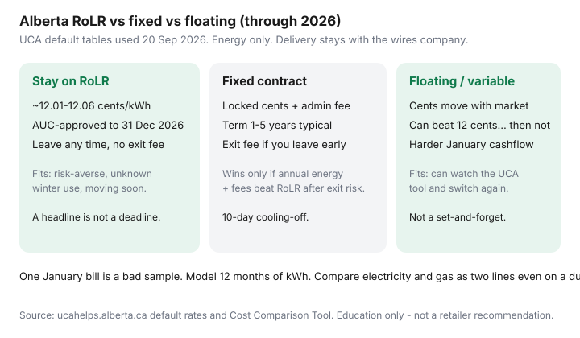

Utilities · Canada
Alberta Rate of Last Resort vs fixed contracts: how to decide without panic shopping
Alberta headlines about default electricity rates push people into five-year contracts they regret by spring. The default is the Rate of Last Resort (RoLR, formerly the Regulated Rate Option). It is an AUC-approved energy ¢ through 31 December 2026. You can stay. You can leave any time with no exit fee. A door-knocker who implies the power will be cut unless you sign today is running a script.
This is a decision framework dated through 2026 — not a second copy of the UCA tool how-to, and not an Ontario RPP explainer. If you also heat with gas, compare fuels in gas vs electric heat after you know which line you can shop.
Disclosure: There is no natural affiliate product in a regulated default-vs-contract decision. Saving Optimizer does not claim retailer, UCA, or utility partnerships. This is education — not a recommendation of any competitive offer.
Key takeaways
- RoLR energy (UCA tables, used 20 Sep 2026): 12.01 ¢ (EPCOR), 12.06 ¢ (ENMAX), 12.02 ¢ (Direct Energy Regulated Services) depending on the distributor column, through 31 Dec 2026. Billing and delivery are extra.
- A fixed contract beats RoLR only if energy + admin − incentives, year two still wins at your kWh, after you can live with the exit fee.
- Floating can print a cheap July and a brutal January. If you cannot watch the UCA tool, do not buy a market ¢.
- Read exit and auto-renewal clauses in dollars before you sign. Cooling-off is 10 calendar days on competitive contracts.
- One winter bill is a bad sample. Model 12 months. Dual-fuel bundles need two winning lines, not one logo.
What RoLR is (formerly RRO) and the current multi-year default window
If you never signed a competitive contract, a default retailer serves you. For electricity that default energy price is the Rate of Last Resort, which replaced the RRO on 1 January 2025. The AUC approved a two-year RoLR term through 31 December 2026. UCA’s default-rate page (used 20 Sep 2026) publishes the commodity table: EPCOR 12.01 ¢ on EPCOR Distribution and FortisAlberta; ENMAX 12.06 ¢ on ENMAX Power; Direct Energy Regulated Services 12.02 ¢ on ATCO Electric. Those cells exclude billing and delivery.
You are not required to leave. You can leave any time without an exit fee. Gas, if you never contracted it, sits on a separate Default Rate Tariff that can change monthly (UCA’s 2026 DRT table moves from winter highs above $3/GJ down through summer). Do not let an electricity conversation silently reprice your furnace.
What happens after 31 Dec 2026 is an AUC / government file, not a reason to sign a 60-month contract in September 2026. Revisit when the next default is published.

When fixed contracts beat RoLR — and when they do not
Open the UCA Cost Comparison Tool. Sort by estimated annual cost at your kWh, not by the bold ¢.
Fixed can win when a clean 7–9 ¢ energy ¢ plus a small admin fee still beats ~12 ¢ × your annual kWh, the term matches how long you will stay in the house, and the exit fee is a number you could write a cheque for if you are posted to Ontario next year.
Fixed loses when the admin fee eats a low-use condo, a first-year credit expires, the exit fee is “remaining months × $X,” or you are buying peace of mind you already have — RoLR is already a regulated ¢ through 2026.
Labelled sketch: 600 kWh × (12.06 − 8.00) ¢ = $24.36 / month on energy, before an $8 admin fee ($96 / year) and before an exit fee. Do that math on the tool’s annual column, not on a Facebook ad.
Floating rates: upside and bill-shock risk
A floating or variable energy ¢ moves with the market or a posted variable. It can sit under RoLR for months. It can also print the January that made people invent RoLR in the first place.
- Upside: you keep optionality; some floaters are month-to-month with a thin exit.
- Downside: cash-flow. A fixed-income household that needs a known Visa debit should not learn the pool price from a bill.
- Homework: if you will not reopen the UCA tool when the ¢ jumps, you do not have a floating strategy. You have a hope.
Reading early-exit and renewal clauses before you sign
Before you give a voice authorization or click:
- Exit fee in dollars — flat, declining, or remaining-months formula. Model a move in month 8.
- Admin / monthly fee — a $6–$10 line can erase a 1 ¢ “win.”
- Incentives — bill credits that die in month 13. Model year two.
- Auto-renewal — to what ¢, at what notice, with what new exit.
- Dual-fuel tie-in — a cheap power ¢ bundled with a rich gas ¢ (or the reverse).
- Cooling-off — 10 calendar days on competitive contracts; phone marketing can have a longer statutory window. Keep the confirmation notice.
If the tool row and the website disagree, believe neither until you have the rate, fee, and exit in writing. UCA mediation (310-4822) exists when a contract and a bill disagree.
Seasonal usage: why one winter bill is a bad sample
Alberta January kWh (and GJ) are not July. A condo that looks like a $40 energy win on a shoulder-month bill can be a $0 win — or a loss after fees — once you include furnace fan, engine-block, and a −30°C recovery. Pull 12 months. If you just moved in, use the house’s history at that address, not your Calgary apartment from 2022.
A switch still takes 10–90 days. You pay the old retailer until the flip. Do not stop payment because you signed last Tuesday.
Decision matrix for risk-averse vs flexible households
| Household | Default move | Only stretch if… |
|---|---|---|
| Risk-averse, fixed income, moving in 18 months | Stay RoLR through 2026 | A month-to-month competitive ¢ with no meaningful exit beats RoLR after fees |
| Stable house, will read a bill, 12 months of data | Shortlist three UCA rows vs RoLR | Year-two all-in still wins and the exit fee is payable |
| Flexible, will watch the tool | RoLR or a thin-exit floater | You have a written rule for when you jump back to RoLR or a fixed |
| Dual-fuel “bundle” pitch | Compare power and gas separately | Both lines win after fees — one logo is not a win |
Panic is the product. The UCA tool is the process. If someone needs an answer in this hallway, the answer is RoLR until you have 12 months of kWh on one page.
Sources & date stamps
- UCA, Default rates — RoLR electricity table to 31 Dec 2026; 2026 natural gas DRT by month (used 20 Sep 2026).
- UCA, Cost Comparison Tool — energy, admin, term, exit, bundles.
- UCA, How to switch / how to choose — 10-day cooling-off; 10–90 day switch; delivery is separate.
- Alberta Utilities Commission — RoLR background (ex-RRO; multi-year default window).
Frequently asked questions
Do I have to leave the Rate of Last Resort before 31 Dec 2026?
No. RoLR is the default energy price through that date. You can stay. You can also leave any time with no exit fee. A notification that you are on RoLR is information, not a cut-off notice.
When does a fixed contract actually beat RoLR?
When the UCA estimated annual energy + admin fees is lower than RoLR at your kWh, and you can live with the exit fee if you move or rates fall. A 7 ¢ ad with an $8 monthly fee can lose on a low-use condo.
Is floating cheaper than RoLR?
Some months. Floating can undercut ~12 ¢ and then print a January you cannot cash-flow. It is a watch-the-tool product, not a set-and-forget.
What if I already signed and regret it?
Competitive contracts have a 10-calendar-day cooling-off (phone contracts can have a longer window). After that, read the exit-fee clause in dollars. UCA mediation: 310-4822.
Does switching retailers lower delivery?
No. You are shopping the energy (and maybe admin) line. The distributor still bills wires and riders.